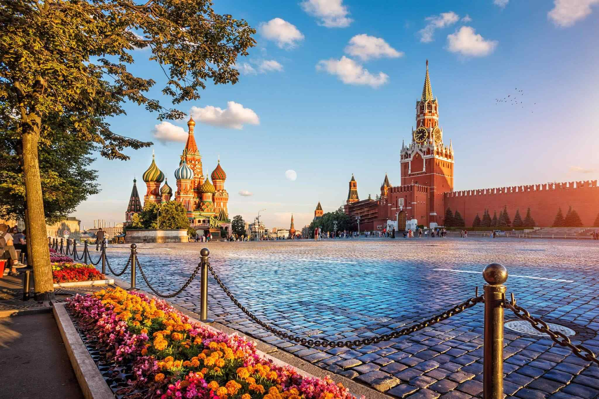

Moscow
Moscow is the capital and largest city of Russia. The city stands on the Moskva River in Central Russia, with a population estimated at 13.0 million residents within the city limits, over 18.8 million residents in the urban area,and over 21.5 million residents in the metropolitan area. The city covers an area of 2,511 square kilometers (970 sq mi), while the urban area covers 5,891 square kilometers (2,275 sq mi), and the metropolitan area covers over 26,000 square kilometers (10,000 sq mi). Moscow is among the world's largest cities, being the most populous city entirely in Europe, the largest urban and metropolitan area in Europe,and the largest city by land area on the European continent.

HOW TO GO THERE
Book your flights from Dubai to Russia today and look forward to gourmet dining, award-winning inflight entertainment and exceptional service with us – no matter which cabin class you're travelling in. We look forward to welcoming you on board.
Currently, there are 18 airlines operating flights between the two destinations and approximately 68 flights take off from Dubai to Moscow every week. You can easily check the Dubai to Moscow Flight Schedule on Makemytrip.
WHEN TO GO THERE
Best Time To Visit In Moscowis between May and September when the weather is warm and the city is in full bloom. This is also the time when the city hosts a variety of cultural events and festivals. However, if you want to experience the true Russian winter, you can visit between December and February.
WHAT TO DO THERE
Moscow in two or three days tour covers
Moscow Kremlin.(including cathedrals)
Red Square.
St Basil's Cathedral.(outside)
Bolshoi Theatre.
Alexander's Gardens.
Zaradje Park.
Moscow metro.
Victory Park.
Lenin's Tomb.(outside)
Christ the Saviour cathedral.
Website Designed by Bogdan Gotovtsev


 @HAPPY_FEET
@HAPPY_FEET HAPPY FEET
HAPPY FEET